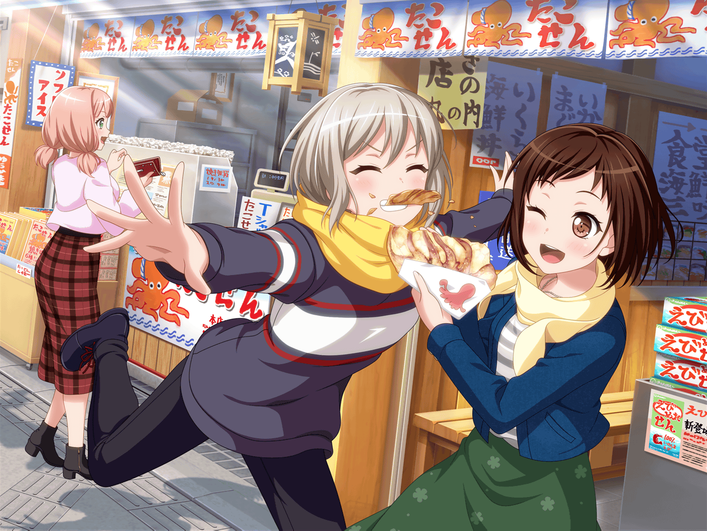
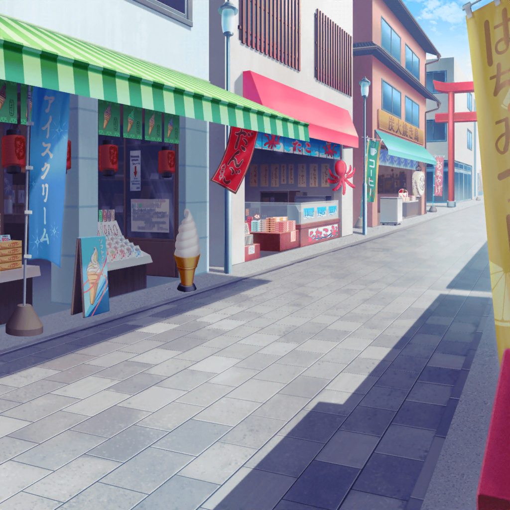

井ノ島 駅
モカ
こっち……いや、こっち……
いやいや、やっぱりこっち……
モカ
ああ……でもこっちも捨てがたいなあ〜……
うーん、どれにしよう……
つぐみ
モカちゃん、どうしたの？
モカ
帰りの電車でマンガでも読もうかなーって思って
つぐみ
確かに、１冊くらいは読めちゃう距離だもんね
モカ
１時間半くらいかかるんだよねー
じゃあ、やっぱりこれかなぁ……
つぐみ
それって、青年マンガの雑誌？
モカちゃんって、そういう系のマンガ好きだよね
モカ
うん。
おもしろいよー
モカ
あーでもこれ先月号買いそびれちゃったしなー……
やっぱりこっちにしようかな
つぐみ
迷ってるならおすすめのマンガがあるよ！
えっとね、この本
つぐみ
少女マンガなんだけど……どうかな？
けっこうボリュームもあるし、ストーリーもおもしろいよ！
モカ
あー、これ知ってるー。
実写映画化されたやつだよね
モカ
ほほー。つぐ、流行り追ってるね〜
つぐみ
実写化されるぐらいだから、
人気あるのかなと思って買ってみたんだ
つぐみ
マンガって、すごくいっぱい出てるでしょ？
だから、どれを選んでいいかわからなくて……
つぐみ
実写化されるぐらいの人気作だったら、
おもしろいんじゃないのかなって
モカ
それでまんまとハマっちゃったわけね〜
つぐみ
モカちゃんも、まんまとハマっちゃうと思う！
ね？ 読んでみて
モカ
うーん、少女マンガってあんまり読まないからな〜。
恋愛モノだと特に
つぐみ
そっか〜……残念。
もし気になったら言って！ 単行本、貸すし！
モカ
そだねー。ありがと、つぐー
つぐみ
モカちゃんは、いつもどういう基準でマンガを選んでるの？
青年誌系がほとんどって感じだけど……
モカ
うーん、絵柄とかタイトルとか表紙とか？
直感で買っちゃうかな〜。で、おもしろかったら続きも読む
モカ
最近はね、これが好きー
モカ
雑誌でしか読んでなくて単行本はまだ買ってないんだけど、
おもしろいよー
つぐみ
けっこうカッコイイ系だね。
モカちゃん、こういう絵柄が好きなんだ
モカ
うん、そうかも。
このマンガはね、背景がすんごいカッコイイんだよー
つぐみ
ちょっと見た感じ、SFっぽいのかな？
モカ
そうそう。
近未来の話で、ある少女が人間に化けたエイリアンと
戦うって話なんだ～
つぐみ
人間に化けたエイリアン……？
ちょ、ちょっとおもしろそう
モカ
でね、その戦う少女っていうのが
普段はすっごくおとなしい子なんだよ～
つぐみ
そうなんだ！ 普段はおとなしいけど、戦うとすごい！
……みたいな？
モカ
そうそう、そんな感じよー。
その子にはすっごい秘密があるからね～
つぐみ
秘密？ どんな……？
モカ
ふふー。これ以上はネタバレになっちゃうから
モカちゃんの口からは言えないな〜
つぐみ
ええ〜！ モカちゃん、気になるよー！
モカ
秘密が知りたいなら、自分の目で確かめなくちゃ。
単行本だとどのへんだろう？
今５巻まで出てるっぽいけど……
つぐみ
うう、気になるけど、一気に５冊買うのは
ちょっとな〜……
モカ
あたしが単行本派だったら貸せたんだけどなあ〜……
つぐみ
気になる……まずは１巻だけ買ってみようかな？
うーん、でも、今日お土産とか色々買っちゃったし……
モカ
あ、そういえばこのマンガ、実写の映画やるんだって。
それを待って、映画で見ちゃうっていうのも手かもよ？
つぐみ
え、そうなの！？ でも、それはそれで……
映画までに原作読んでおきたいっていうか……
モカ
あー、その気持ちはわかる
つぐみ
私、１巻だけ買うことにする！
それで、気になったら続きを買って、映画も見てみるよ
モカ
うん、いい流れだねー、つぐ。
じゃあ、一緒にレジまで行こー
モカ
あ、あと１巻買ったらあたしにも貸して〜。
久しぶりに読み返したいかも〜